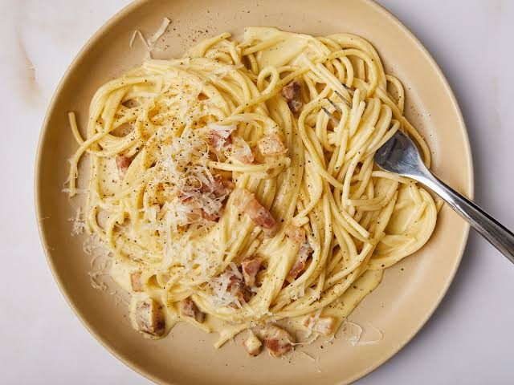

Spagetti Carbonara
To go back to the Index, Click Here

Spagetti Carbonara
A classic Roman pasta dish made with egg, hard cheese, cured pork, and black pepper.
It is renowned for its rich, silky sauce that is created purely from the emulsion of starchy pasta water,
rendered pork fat, and eggs, without any heavy cream.
Ingredients
- 400g Spagetti
- 150g Guanciale
- 100g Pecorino Romano
- 4 Large egg yolks
- 1 Whole egg
- Freshly ground black pepper
Steps
- Boil the spaghetti in salted water until perfectly al dente.
- Fry the guanciale in a large skillet over medium heat until crispy and the fat has rendered.
- Whisk the egg yolks, whole egg, and grated Pecorino Romano together in a small bowl.
- Remove the skillet from the heat and use tongs to transfer the hot pasta directly into the pork fat, tossing to coat.
- Quickly stir in the egg and cheese mixture, adding small splashes of hot pasta water as you vigorously mix to create a glossy, creamy sauce.
- Season generously with black pepper and serve immediately.